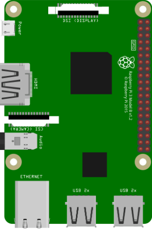
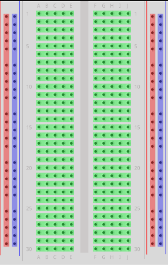
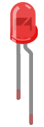
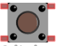
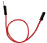
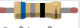
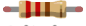
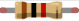

கூறுகள் என்றால் என்ன?
கூறுகள் ஒரு பெரிய முழுமையின் பகுதிகள். இந்த அத்தியாயத்தில், எங்கள் டுடோரியலில் பயன்படுத்தும் வெவ்வேறு கூறுகளை விளக்குகிறோம்.
Raspberry Pi மற்றும் GPIO பின்கள்

Raspberry Pi 3 with GPIO
இது ஒரு Raspberry Pi 3 இன் விளக்கப்படம்.
GPIO பின்கள் Raspberry Pi இன் வலது பக்கத்தில் இரண்டு வரிசைகளில் உள்ள சிறிய சிவப்பு சதுரங்கள், உண்மையான Raspberry Pi இல் அவை சிறிய உலோக பின்கள்.
உள்ளீட்டு பின்கள் வெளிப்புற உலகத்திலிருந்து இயக்க அல்லது அணைக்கக்கூடிய சுவிட்சுகள் போன்றவை (ஒரு இயக்க/அணை விளக்கு சுவிட்சு போன்றது).
வெளியீட்டு பின்கள் Raspberry Pi இயக்க அல்லது அணைக்கக்கூடிய சுவிட்சுகள் போன்றவை (ஒரு LED விளக்கை இயக்க/அணைப்பது போன்றது).
Raspberry Pi 3 க்கு 26 GPIO பின்கள் உள்ளன, மீதமுள்ள பின்கள் பவர், கிரவுண்ட் அல்லது "மற்றவை".
பின் இடங்கள் கீழே உள்ள அட்டவணையுடன் ஒத்துப்போகின்றன.
Raspberry Pi B+, 2, 3 & Zero
| பின் 1 | பின் எண் | பின் 2 | பின் எண் |
|---|---|---|---|
| 3V3 | 1 | 5V | 2 |
| GPIO 2 | 3 | 5V | 4 |
| GPIO 3 | 5 | GND | 6 |
| GPIO 4 | 7 | GPIO 14 | 8 |
| GND | 9 | GPIO 15 | 10 |
| GPIO 17 | 11 | GPIO 18 | 12 |
| GPIO 27 | 13 | GND | 14 |
| GPIO 22 | 15 | GPIO 23 | 16 |
| 3V3 | 17 | GPIO 24 | 18 |
| GPIO 10 | 19 | GND | 20 |
| GPIO 9 | 21 | GPIO 25 | 22 |
| GPIO 11 | 23 | GPIO 8 | 24 |
| GND | 25 | GPIO 7 | 26 |
| DNC | 27 | DNC | 28 |
| GPIO 5 | 29 | GND | 30 |
| GPIO 6 | 31 | GPIO 12 | 32 |
| GPIO 13 | 33 | GND | 34 |
| GPIO 19 | 35 | GPIO 16 | 36 |
| GPIO 26 | 37 | GPIO 20 | 38 |
| GND | 39 | GPIO 21 | 40 |
விளக்கம்
பவர் +
மின்சாரம் வழங்கும் பின்கள்
கிரவுண்ட்
பூமி/கிரவுண்ட் இணைப்புகள்
UART
தொடர் தகவல்தொடர்பு
I2C
இடை-ஒருங்கிணைந்த சுற்று
SPI
தொடர் புறிமுறை இடைமுகம்
GPIO
பொது நோக்க உள்ளீடு/வெளியீடு
இணைக்க வேண்டாம்
பயன்பாட்டிற்கு இணைக்கக்கூடாத பின்கள்
பிரெட்போர்டு
ஒரு பிரெட்போர்டு மின்னணுவியல் முன்மாதிரிகளுக்குப் பயன்படுத்தப்படுகிறது, இது சாலிடரிங் இல்லாமல் சுற்றுகளை உருவாக்க உங்களை அனுமதிக்கிறது. இது அடிப்படையில் ஒரு பிளாஸ்டிக் பலகை, டை-பாயிண்ட்களின் (துளைகள்) கட்டத்துடன். பலகையின் உள்ளே உலோக துண்டுகள் குறிப்பிட்ட வழிகளில் வெவ்வேறு டை-பாயிண்ட்களை இணைக்கின்றன.

Breadboard with connections highlighted
கீழே உள்ள விளக்கப்படத்தில் வெவ்வேறு நிறங்களுடன் சில பிரிவுகளை முன்னிலைப்படுத்தியுள்ளோம். கட்டம் எவ்வாறு இணைக்கப்பட்டுள்ளது என்பதைக் காட்ட இதுவாகும்.
பிரெட்போர்டின் வெவ்வேறு பிரிவுகள்:
மற்ற மின்னணு கூறுகள்
த்ரூ ஹோல் LED

ஒளி உமிழும் டையோடு (LED). ஒரு LED என்பது ஒரு மின்னழுத்தம் பயன்படுத்தப்படும் போது ஒளியை வெளியிடும் ஒரு டையோடு ஆகும். எங்கள் எடுத்துக்காட்டில் நாம் ஒரு த்ரூ ஹோல் LED ஐப் பயன்படுத்துகிறோம். அவை ஒரு நேர்மறை (அனோடு என்று அழைக்கப்படுகிறது), மற்றும் ஒரு எதிர்மறை (கேதோடு என்று அழைக்கப்படுகிறது) பின்னைக் கொண்டுள்ளன. LED இல் நீளமான கால் நேர்மறை பின்னைக் குறிக்க வேண்டும்.
RGB LED
ஒளி உமிழும் டையோடு (LED). ஒரு LED என்பது ஒரு மின்னழுத்தம் பயன்படுத்தப்படும் போது ஒளியை வெளியிடும் ஒரு டையோடு ஆகும். ஒரு RGB LED க்கு 4 பின்கள் உள்ளன. ஒவ்வொரு வண்ணத்திற்கும் ஒன்று (R = சிவப்பு, G = பச்சை, மற்றும், B = நீலம்), மற்றும் ஒரு பொதுவான கேதோடு/அனோடு. இந்த ஒரு LED தூய வண்ணங்களைக் காட்டலாம், அல்லது வண்ணங்களை மாற்றியமைக்க மற்றும் கலக்க PWD உடன்.
புஷ் பட்டன்

ஒரு புஷ் பட்டன் என்பது ஒரு வகை சுவிட்சு. ஒரு சுவிட்சு ஒரு மின்சார சுற்றுவட்டத்தில் ஒரு இணைப்பை உருவாக்குகிறது அல்லது உடைக்கிறது.
ஜம்பர் கம்பி - பெண் முதல் ஆண்

ஜம்பர் கம்பிகள் என்று அழைக்கப்படும் கம்பிகளின் குறுகிய துண்டுகள் இணைப்புகளை உருவாக்க பயன்படுத்தப்படுகின்றன. பெண் முதல் ஆண் ஜம்பர் கம்பிகள் Raspberry Pi இல் உள்ள GPIO இலிருந்து பிரெட்போர்டுக்கு இணைக்க பயன்படுத்தப்படும்.
ஜம்பர் கம்பி - ஆண் முதல் ஆண்
ஜம்பர் கம்பிகள் என்று அழைக்கப்படும் கம்பிகளின் குறுகிய துண்டுகள் இணைப்புகளை உருவாக்க பயன்படுத்தப்படுகின்றன. ஆண் முதல் ஆண் ஜம்பர் கம்பிகள் பிரெட்போர்டின் வெவ்வேறு பகுதிகளுக்கு இடையே இணைப்புகளை உருவாக்க பயன்படுத்தப்படும்.
மின்தடை - 68 ஓம்

மின்தடைகள் மின்னோட்டத்தைக் குறைக்க, சிக்னல் நிலைகளை சரிசெய்ய போன்றவற்றுக்குப் பயன்படுத்தப்படுகின்றன. இது ஒரு 68 ஓம் மின்தடை.
மின்தடை - 220 ஓம்

மின்தடைகள் மின்னோட்டத்தைக் குறைக்க, சிக்னல் நிலைகளை சரிசெய்ய போன்றவற்றுக்குப் பயன்படுத்தப்படுகின்றன. இது ஒரு 220 ஓம் மின்தடை.
மின்தடை - 1k ஓம்

மின்தடைகள் மின்னோட்டத்தைக் குறைக்க, சிக்னல் நிலைகளை சரிசெய்ய போன்றவற்றுக்குப் பயன்படுத்தப்படுகின்றன. இது ஒரு 1k ஓம் மின்தடை.
Node.js தொகுதிகள்
pigpio
pigpio C நூலகத்திற்கான மேலுறை. Node.js உடன் GPIO, PWM, சர்வோ கட்டுப்பாடு, நிலை மாற்ற அறிவிப்பு மற்றும் இடையீட்டு கையாளுதல் ஆகியவற்றை இயலுமைப்படுத்துகிறது
ஆவணம்: pigpio ஆவணம்